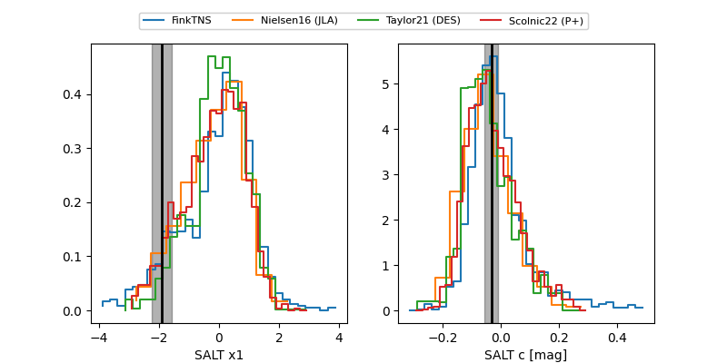

FINK: ZTF25abpkect
Lasair: ZTF25abpkect
ALeRCE: ZTF25abpkect
TNS: 2025xby
YSE: 2025xby
ZTF25abpkect (ztf,fink)
2025xby (tns,yse)
ATLAS25lec (atlas)
PS25hqc (panstarrs)
equatorial (ra, dec) = (327.9394,-6.90771)
galactic (l, b) = (49.8706,-42.87964)

last atlasc=17.98, atlaso=18.72, ztfg=19.24, ztfr=18.71
1 atlasc, 9 atlaso, 20 ztfg, 21 ztfr detections